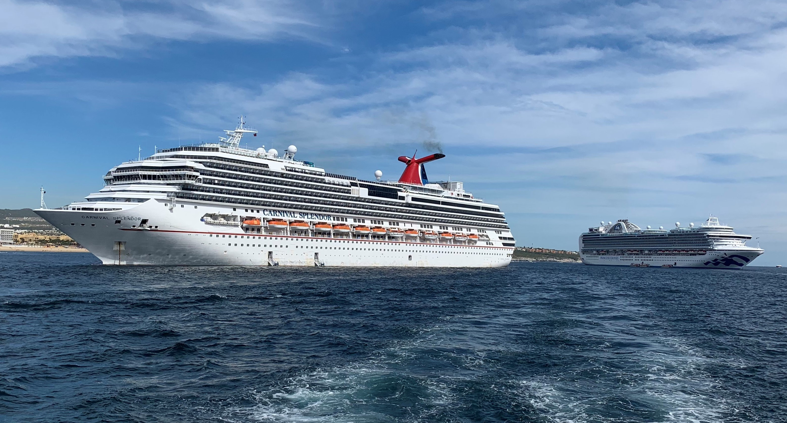
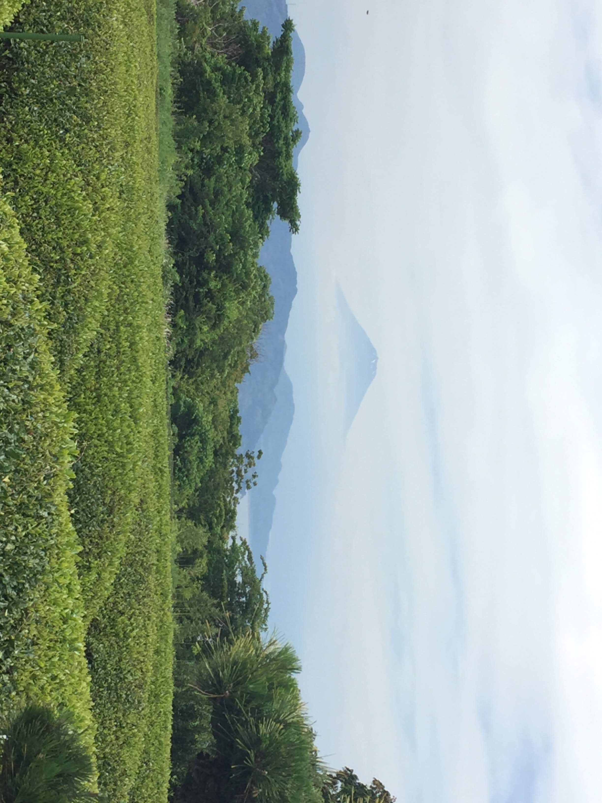

Welcome to the blog! I'll be updating and adding new posts as often as I can, so keep a look out for future content. Hope you enjoy my adventures and maybe be inspired to take some of your own!
Western Mexico Cruise
Preview: Full Blog to be posted soon
Traveling on a cruise has always been a dream of mine, and coming from California, the first cruise I went on was one leaving from Long Beach, CA. It was on the Carnival Cruise line, aboard the Carnival Splendor, which on my travel, sailed down the west coast of Mexico and visiting ports such as Cabo San Lucas, Puerto Vallarta, and Mazatlan. I won't lie, there was a bit of rocky seas, but the adventure and experience totally made up for it...
Travels in Japan
October 5th, 2020
Of all the places in the world which I wished to travel to, Japan is one which has always been on the top of my to-go-places. From the culture to the food, there's so many unique quirks about the country which hasn't been fully explored or discovered by western culture. With it being one of my top places to travel, it was the first country I traveled to when I decided to become a full-time traveler...